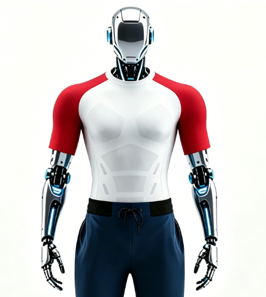

Flagship
Roboskin Systems
Custom-engineered knitted structures for coverage, motion, ventilation and optional functional integration.
Custom-engineered knitted structures for coverage, motion, ventilation and optional functional integration.

03Color-blocked apparel for competitions, launches, exhibitions and brand demonstrations.
 04
04Colors, logos, access zones and material properties configured around the robot.